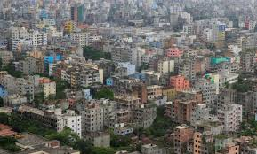
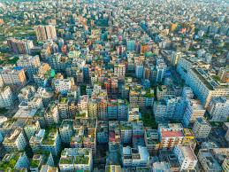

Dhaka is the bustling capital and largest city of Bangladesh, serving as the economic, political, and cultural heart of the country. Situated on the banks of the Buriganga River, it is one of the most densely populated and fastest-growing megacities in the world, with a metropolitan population exceeding 20 million.
City of Mosques
City that never sleeps
City of Rickshaws
Venice of the East
• Megacity
306 km2 (118 sq mi)
• Metro 2,569.55[9] km2 (992.11 sq mi)
• Megacity
10,278,882
• Rank 1st in Bangladesh
• Density 33,600/km2 (87,000/sq mi)
• Metro 36,585,479[12]
• Metro density 14,238.1/km2 (36,876.5/sq mi)
• City rank[16] 1st in Bangladesh
• Metro rank[17] 1st in Bangladesh;
1st in Bengal Region;
1st in South Asia;
2nd in Asia;
2nd in the world